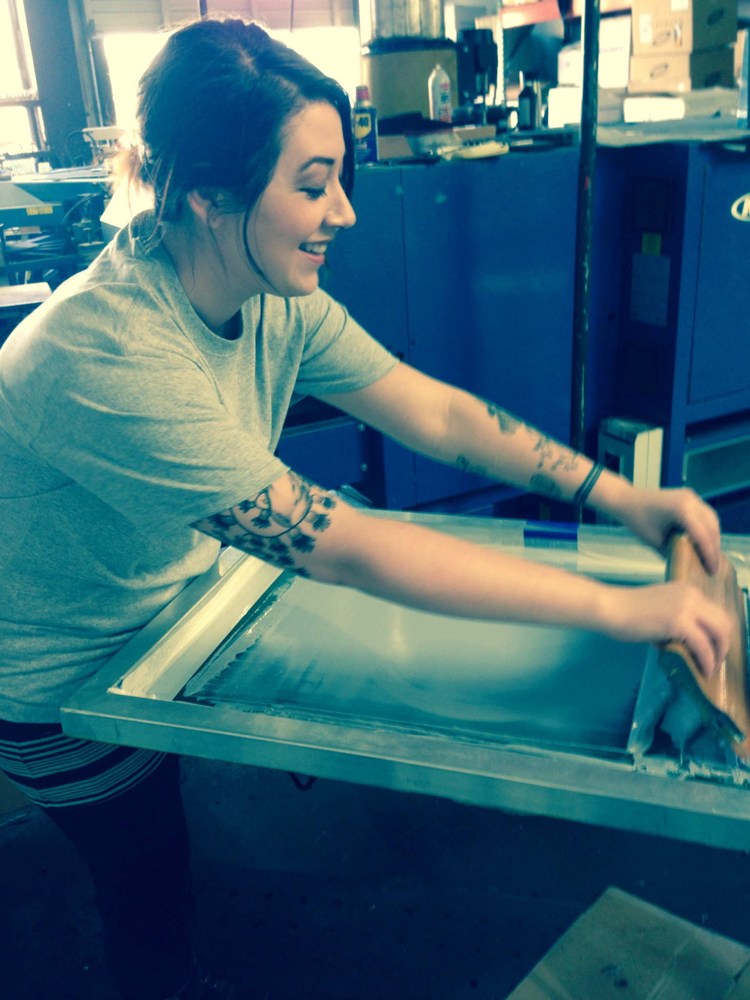

Printing.
Load up your screen with your ink and load a tester on your platen. Make sure you smooth out your tester well for an even printing surface. Flood the stencil with ink evenly before dropping the screen onto the platen. Drop your screen and start your stroke about an inch below or above the stencil, depending on whether you are pushing or pulling. Using the edge of the blade and suitable pressure, clear the ink in the stencil with your stroke. Be sure your stencil is clear before lifing up the screen. Lift your screen and make sure you get a satisfactory deposit on the tester.
Measure how far down the image starts from the top of the platen. Use this information to in reference to where you want the image to fall on your actual garment. If it's two inches from the top, and you want the image to start two inches from the bottom of the colar, load the garment colar off. Be sure to check dryer speed and temp, and check the cure at the end of the belt. A good resource on platisol ink curing can be found here.
